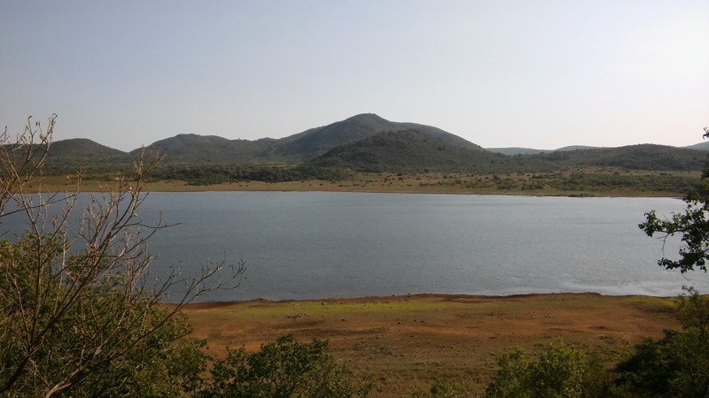

|
|
lartunet — home — computing : games & art : research — sitemap |
— P44N10 (JPEG) - view original (639 KiB, JPG)
Fred Bednarski explains this much better than I. The contents of this page are strongly based on theirs.
The lartunet rejects the conventional trends and practices of the mainstream web, that is broken, sluggish, bloated and full of corporate intervention. It instead focuses on providing an honest experience that encourages exploration.
As such, I aim to make every page of the lartunet straightforward, free of bloat and distractions. I want this website to be accessible from any internet-capable device, regardless of age and computing power.
I also don't shoot for perfection, but maintainability and scalability. I've developed my own HTML pre-processor to help me write and expand the lartunet, while keeping it minimal and simple.
This all takes me to the subject of digital gardens. The lartunet is my digital garden. As Fred states on fdisk:
«The digital garden movement focuses on a more mindful and personal approach to organizing and presenting information on the web.
[...] Gardens grow things. You are the one cultivating the garden, but in the end nature will take whatever course it wants and you'll adapt. Just like real gardens, a digital garden is a constant work in progress; it's a different way of thinking about creating. Instead of focusing on a finished "product" you embrace the process. Create a page for anything you want to preserve, write what's on your mind. Don't worry about finishing it there and there - it's not a draft, it's a new seedling, worthy of its place in the sun. Expand it when you have more to add, let it spark new ideas and new pages. Give it time and space to grow.
Gardens are physical spaces that are both familiar and wild. You can stick to the path and get where you want to be, or you can go exploring and even get lost inside. A good garden will provide a sense of discovery. A digital garden should mimic such topology. You need just enough structure to allow for easy navigation, everything beyond that should be designed with exploration in mind. Use in-text hyperlinks as paths. Connect ideas and topics. Let pages branch out to new pages and even loop back on themselves. Give options to step off the beaten path, but don't force it.»